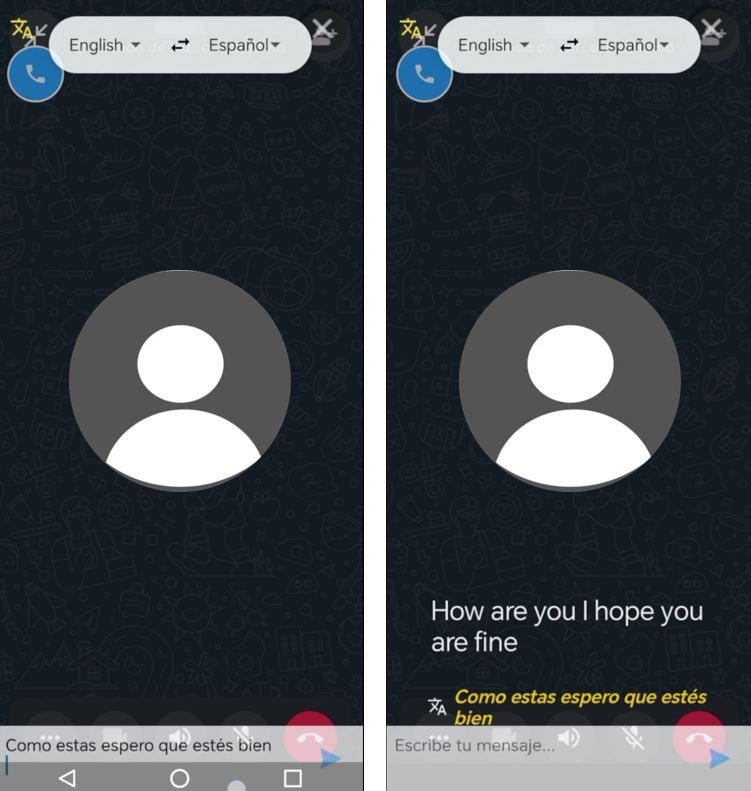
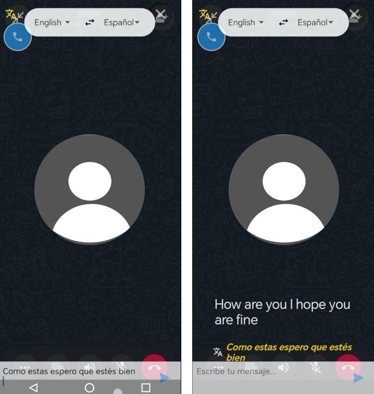

La historia detrás del proyecto
Todo comenzó con un problema simple pero enorme:
Primero quisiera empezar dándoles una breve explicación sobre mi aplicación, mi nombre Alejandro Linares; esta idea nace de la necesidad de poder comunicarse a través de mensajes de texto como de llamadas telefónicas pensado tanto para personas que solo dominan su idioma nativo como en mi caso y para personas que podrían comunicarse con personas de otros idiomas en otros países con el propósito de trabajo ya sea para uso personal o para uso empresarial como lo pueden ser Agencias de viajes y operadores turísticos, Freelancers y equipos de soporte multilingüe, Profesionales independientes en comercio exterior o incluso call centers.
Pero ¿cómo se podría dar una solución a todo esto tomando en cuenta las tecnologías de ahora en día? Me atrevería a decir que no existe actualmente una aplicación que implementa las funciones de mi app ya que funciona tanto para conversaciones desde la misma interfaz de WhatsApp sin interrumpir con la fluidez de la conversación; de la misma manera funciona para llamadas telefónicas permitiendo la traducción de la otra persona al idioma nativo del usuario y poder responder automáticamente lo expresado en el idioma de la otra persona, siempre dentro de la plataforma de WhatsApp.


 
